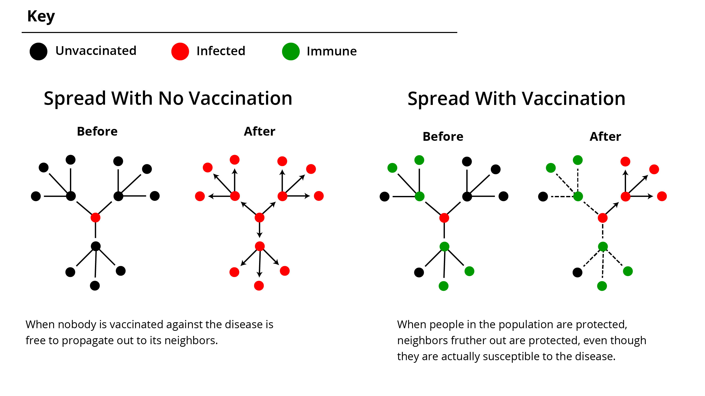

Herd immunity is a concept describing the group protection from an infectious disease that emerges when critical mass of the population is immunized from receiving and spreading that disease. In most cases immunization comes from vaccination against the specific disease. These immunized people in the population prevent the disease from being passed further along to people they pass by. In other words, persons that are not immune to disease can still be shielded against contracting it by virtue of others in the population being unable to pass it on. The greater number of people immune to a disease, the less likely of a chance that someone vulnerable to the disease will contract it. Herd immunity is important because there people who cannot be vaccinated against certain diseases such as those who are too young, too old, or allergic to the vaccination. These people must rely on those around to get vaccinated so that the diease has lower odds of spreading to them.
The diagram above shows the difference between how a disease might spread in a population where no one is protected against the disease versus where the population where some people are vaccinated. Notice that some of the people who are not vaccinated remain uninfected because immune neighbors impeded the spread of the disease.
A population is deemed to have achieved herd immunity against an infectious disease outbreak when they have reached or surpassed the herd immunity threshold, denoted as Qc. To calculate the value of Q c, one would need to know the basic reproductive rate of the specific disease, denoted as R 0. R0 is a numeric measure representing the average number of infections made by that specific disease based on it's various attibutes such as method of spread and duration if infection. The higher that number is, the more infectious the disease is said to be. Using the entire equation, we can determine the herd immunity threshold calculated by solving for the equation Qc = 1 – (1/R0). For example, mumps can have a R0 of 7, so we can subsitute it in giving us 1 - (1/7) = 0.86, which, when converted int o percentage, yields a herd immunity threshold of approximately 86%.
One additional step required to determine the vaccination rate needed for the population. This equation makes the assumption that vaccination against the disease would be 100 percent effective. In reality, vaccines are not perfectly effective. Therefore to calculate the vaccination rate needed for herd immunity, we also need to divide Qc by the effectiveness of the vaccine denoted as (E). Thus the percentage of the population required need to vaccinated to reach the herd immunity threshold can be approximated asVc = Qc/E. Going with the previous mumps example, two doses of the mumps vaccine result a effectiveness of 88%. When converted to a decimal, we can get the equation 0.86/0.88 = 0.97, which converts to 97%. So 97% of the population is actually needed to achieve herd immunity against mumps!
When the vaccination coverage of a population has the necessary percentage for herd immunity, the disease is thought off as "contained".
| Disease Name | Reproductive Number (R 0) | Vaccine Effectiveness ( E) |
|---|---|---|
| Measles | 12-18 | 93% (One Dose)
97% (Two Doses) |
| Mumps | 4-7 | 78% (Two Doses)
88% (Three Doses) |
| Polio | 5-7 | 90% (Two Doses)
99% (Three Doses) |
| Rubella | 5-7 | 97% |
| Seasonal Flu | 1-2 | Varys, but typically
between 40% - 60% |
History and epidemiology of global smallpox eradication. (2014, August 25). Retrieved from https://stacks.cdc.gov/view/cdc/27929
Vaccine Effectiveness - How Well Does the Flu Vaccine Work? (n.d.). Retrieved from https://www.cdc.gov/flu/about/qa/vaccineeffect.htm
Measles, Mumps, and Rubella (MMR) Vaccination: What Everyone Should Know. (n.d.) Retrieved from https://www.cdc.gov/vaccines/vpd/mmr/public/index.html
Polio Vaccine Effectiveness and Duration of Protection (n.d.) https://www.cdc.gov/vaccines/vpd/polio/hcp/effectiveness-duration-protection.html
Watch the effect of vaccination and herd immunity in action by simulating your own outbreak. In the simulation you will be able to modify the reproductive rate of your disease, the effectiveness of the vaccination against it and the vaccination rate of the population. In the simulation, your fictitious disease will have ten attempts infect someone in a population of 250 people. Each time the disease infects a person, it will spread twice according to the reproductive rate you set – once to the R0 number of closest neighbors from the initial infection, and then again for each of the neighbors infected. To incorporate some real life randomness, the location distribution of the vaccinated, unvaccinated and vaccinated but vulnerable is randomly distributed. This will cause some variation the simulation, but you view see the average results on the line graph.
Hover to learn more about a segment
Javascript is broken :(
| Sim No. | Reproductive Number | Percent Vaccinated | Percent of Possible | Percent of Total |
|---|
The Simple Math of Herd Immunity. (2015, April 20). Retrieved from https://thoughtscapism.com/2015/04/20/the-simple-math-of-herd-immunity/
What is Herd Immunity? (2014, September 5). Retrieved from http://www.pbs.org/wgbh/nova/body/herd-immunity.html